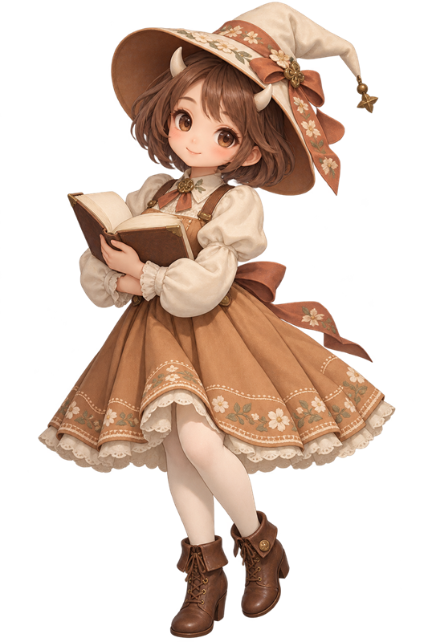

生まれ育った場所
ふるさとの風景
山の見える町で生まれ、季節を身近に感じながら育ちました。春の花、夏の夕暮れ、冬の澄んだ空気。ふるさとのことを思うと、今も心が静かに温かくなります。

キャラクターなし
選ぶと、本文のキャラクターも入れ替わります。
人物・経歴はすべて架空です。
B07 写真でつづる日々
人生の履歴書
たちばな はな
〜 私が歩んだ約80年の物語 〜
一人の人生には、一冊の本になるほどの物語がある。
好きなものと、大切な人に囲まれて。
物語を読む
人生の景色を、写真でつづる
写真のそばに言葉を添えると、その日の空気まで戻ってくる気がします。私の人生の風景を、ご一緒に。
山の見える町で生まれ、季節を身近に感じながら育ちました。春の花、夏の夕暮れ、冬の澄んだ空気。ふるさとのことを思うと、今も心が静かに温かくなります。
小さい頃は、庭で見つけた花を、小さな瓶に飾るのが好きでした。何でもない一日が、少し特別になる気がしたのです。今も、暮らしの中の小さな美しさに出会うと嬉しくなります。
図書室で本を選んだ時間や、友人と手紙を交換したことを覚えています。好きな文章を見つけると、誰かに伝えたくなりました。言葉で気持ちを届ける楽しさを知った日々でした。
お店で働きながら、品物を丁寧に包むことや、相手の話をよく聞くことを学びました。忙しい中でも、ひとこと添えるだけで表情が和らぐことがあります。人との小さなやり取りに、仕事の喜びがありました。
家族と囲んだ食卓には、いろいろな思い出があります。楽しかった話も、少し困った話も、一緒に聞いて過ごしました。同じ場所で時を重ねられたことを、ありがたく感じています。
暮らしが落ち着いた頃、以前から気になっていた手仕事を始めました。最初は小さな袋を一つ。好きなことに向き合う時間が、自分らしい楽しみを取り戻すきっかけになりました。
身近な風景に囲まれて育つ。
人との出会いから、少しずつ世界が広がる。
その年の世の中：東京オリンピック開催
日本オリンピック委員会（ご本人の体験とは別の参考情報）
目の前のことに向き合いながら歩む。
その年の世の中：大阪で日本万国博覧会開催
外務省（ご本人の体験とは別の参考情報）
暮らしの中に、新しい楽しみを見つける。
その年の世の中：元号が平成から令和へ
内閣府（ご本人の体験とは別の参考情報）
感謝と小さな希望を胸に、時を重ねる。
忘れたくない、四つの場面
忘れたくない場面を、光に透かして眺めるように。好きな時間と、心に残った出来事を選んで並べました。
布を選び、針を進めていると、時間がゆっくり流れます。花を飾ること、好きな歌を口ずさむことも日々の楽しみです。大きなことではなくても、心が弾む時間を持っていたいと思います。
友人と列車で温泉の町へ出かけたことがあります。道に迷って笑ったことも、窓辺でお茶を飲んだことも、今では懐かしい思い出です。一緒に過ごした時間が、旅を特別なものにしてくれました。
手作りの袋を贈った時、「使うのが楽しみ」と言ってもらえました。相手を思いながら作ったものが、暮らしの中で役立つこと。それは、私にとって、とても嬉しい出来事でした。
うまくいかない時には、人に頼ることが苦手でした。それでも、話を聞いてくれる人の存在に何度も助けられました。自分にも、周りの人にも、少し優しくなれるようにと思っています。